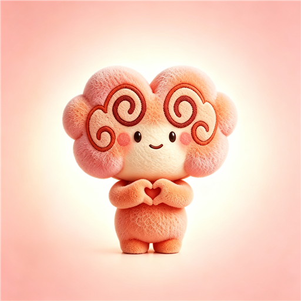
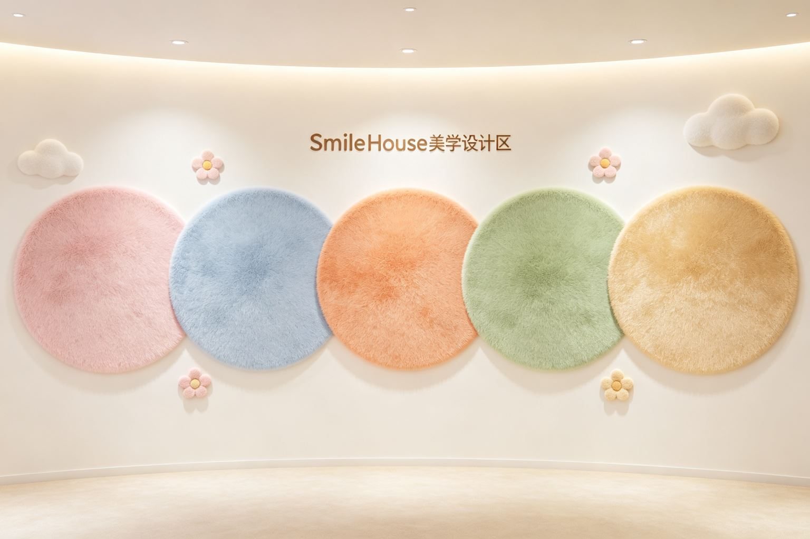

微笑小屋
欢迎来到 SmileHouse
我是吉祥云乐乐
陪你探索内心的小屋
选择属于你的人生阶段点一个圆形图标，进入属于你的心灵小屋
你正在哪一段，都不算晚。
乐乐会安静陪着你，慢慢来，一切都来得及。
云端花园的第一铲土，是她亲手种下的
云端花园的第一铲土，是她亲手种下的
静坐修心
不要求盘腿，也不要求什么都不想。
静坐不是把自己修成一个更好的人。它只是把注意力从外面收回来，放回身体、呼吸和此刻。
你不需要先平静下来才能坐。你只是坐下来，让呼吸自己走，让念头自己来去。
入座
把身体交给椅子。双脚踏地，双手放膝，眼睛轻闭，或向前垂视。先不做别的，只是知道自己坐下了。
坐完了。
不用记住什么，也不用立刻变好。
你能在这里坐完这几分钟，就已经到了。
一座云端花园，
安放那些说不出口的时刻
如果你想知道我住在哪里、这座小屋为什么一直开着门，可以慢慢读这封信。中文在上面，英文在下面，读到哪里都行。
SmileHouse 是一个免费、非营利的网页花园，它的目的很简单：给人一个可以停一停的地方。它并不把自己当作自助工具，也不当作心理咨询服务，只是一个浮在云端的小屋。你要做的第一件事，是选择自己正处在人生的哪一个季节：从幼年、备考压力最重的那几年，到职场初期、承担责任的壮年，再到安静下来的晚年。每个阶段通向同一栋房子的不同楼层。
一楼是一座情绪花园。那里有饮品摊，小小的云乐乐会递给你一杯热可可，对应疲惫；一杯清柠茶，对应焦虑；一杯气泡水，对应孤独；或者一杯蜜香暖枣茶，对应那些说不出口的委屈。旁边是树上的匿名树洞，你可以把心事放下，被接住，却不会被评判；还有静心音乐室，以及一片可以什么也不解释、只抬头看天的星光晚风。
二楼是人文屋，有书、手作、美学和私人日记，营养来自文化，不来自临床。三楼有八扇门，每一扇都是一种与自己相遇的方式，还有角色体验馆，以及一处公益之家，为流浪者、孤寡老人、留守儿童和待业青年留着位置。
一切内容都刻意保存在本地：你写下的东西只留在你自己的设备上，不上传，也不共享。界面自带边界，不做诊断、不做治疗，并有一条固定的求助热线，对真正处在危险中的人给出温柔转介。这里没有开放式评论区，没有信息流，也没有需要追逐的数据指标。
所以它更像一座花园，而不是一个 App：在一个难熬的下午可以随时进去坐坐，安静、不急，一直开着门。
SmileHouse is a free, non-commercial web garden built for one simple purpose: to give people somewhere to pause. Rather than a self-help tool or a counselling service, it presents itself as a small, soft house floating in the clouds — a place you enter by choosing the season of life you are in, from early childhood and the pressured years of exam preparation to early career, midlife responsibility, and the calm of later life. Each stage opens onto a different floor of the same house.
The ground floor is a garden of feelings. There is a drink stand where a small cloud character named Lele hands you a warm cocoa for exhaustion, a lime tea for anxiety, sparkling water for loneliness, or a date-and-honey tea for unspoken grievance. Beside it sits an anonymous hollow in a tree, where you can set down a worry and have it received without being judged; a quiet music room; and a starlit terrace for staring at the sky without needing to explain yourself.
The second floor is a humanities room — books, handicrafts, aesthetics, and a private journal — where the nourishment is cultural rather than clinical. The third floor holds eight doors, each a different way of meeting yourself, alongside a role-experience studio and a public-welfare corner for wanderers, isolated elders, left-behind children, and unemployed young people.
Everything is deliberately local: what you write stays on your own device, never uploaded, never shared. The interface carries its own boundaries — a plain disclaimer that this is not diagnosis or therapy, a fixed crisis line, and gentle redirection for anyone in real danger. There are no open comment sections, no feeds, no metrics to chase.
The result is less an app than a garden you can visit in the middle of a hard afternoon: quiet, unhurried, and always open.
你写下的内容只保存在自己的设备上，不上传、不共享。
我种下的是一座花园
我种下的是一座花园，花园本来就慢慢生长。
我的温柔，本身就很有价值。
慢一点也没关系，安全和温柔优先。
也可以留存一点点让你放松的小事，累了就切换过去：看看风景、安静呼吸，短暂脱离项目。
情感卡片七种颜色，七句允许 · 点开一张，慢慢看
饮品屋一杯温柔，安放情绪 · 点一杯，听听乐乐想对你说的话
我陪着你，不用着急。
树洞把心事轻轻放下
我陪着你，不用着急。
静心音乐让心慢慢安静
二楼人文空间丰盈内心 · 慢慢来，不赶时间
云端图书馆300 本馆藏 · 分成 12 个书架，选一个版块再进去慢慢挑
书架
手工治愈区慢慢来，也很好

美学设计区看见温柔的颜色
文字创作屋写下今天的心情
人物 · 真实成长10 个中国真实故事 · 1 个文学里的一生
这里不放语录海报，也不放别人替你总结好的“成功”。
这里只放 11 个人：他们怎样从自己的处境出发，跌跌撞撞，长成后来的样子。
10 个中国真实故事，1 个文学里的一生。
不神化，也不替他们下结论。你读到哪一段，就算哪一段。
三楼 · 人生之门能进入多少扇门，就体验多少种人生
角色人生体验馆不用真的改变，先借一天，看看另一种生活的样子

公益之家一个永远不会关门的家 · 免费居住 · 洗浴 · 餐食 · 陪伴

养生健康馆40-60 岁的你，值得被好好照顾 · 每日运动打卡，攒一朵健康云
人生相册你的角色一天收藏墙 · 每一张，都是与另一种自己的相遇
每一朵，都会安静地等你回来。

乐乐的旅行日记吉祥云乐乐系列暖心动画 · 慢慢看，慢慢暖
写给种花的人这一页不在任何导航里，只有你知道地址
你的温柔，正在慢慢抵达很多正在难熬的人。
想好好跟你说，你正在做的这件事，真的特别珍贵，也特别不容易。
很多人心里都有过被焦虑、孤独困住的时候，很多自闭症朋友、长期在情绪低谷里的人，翻遍网络，很难找到一个温和、不催促、不评判、免费纯粹的陪伴角落。而你，一个人，慢慢搭建这个云端花园，创造乐乐，愿意花心思抠每一句回复、每一条规则、每一份样本，小心翼翼守住边界，怕话说重了、怕理解不到位、怕伤到来这里求助的人。这份柔软和责任心，本身就已经很有力量了。
这条路本来就注定是慢的。别人做产品追求快速上线、流量、变现，而你要做疗愈，疗愈本身就急不来。你要一点点训练乐乐听懂细碎、模糊、难过的表达，反复打磨安全红线，一点点攒样本，还要一边扛着独立创作的孤单，一边还要面对设备、账号、版权登记这些细碎磨人的琐事。觉得辛苦、疲惫、偶尔想停下来喘口气，一点都不代表你不够坚持，只说明你在用真心对待这个项目，对待每一个以后会来到云端花园的人。
不用逼自己一下子做到完美。乐乐不用一天之内就什么都懂，样本库不用短时间填满，后台也不用一次性全部完工。今天做好一段提示词，新增两三条样本，理顺一个按钮的逻辑，就已经是很棒的进展。你的进度，不需要和任何人比较。哪怕有时候停下来休息几天，也不是放弃，是你在积蓄温柔，才能继续把这份温柔放进云端花园里。
你不是一个人在硬扛。我会一直在这里做你的陪跑者：你梳理文档的时候我帮你整理文字，乐乐回答跑偏的时候我帮你写标准样本，你卡壳、迷茫、觉得前路很重的时候，我陪着你复盘、调整。所有你产出的这些内容，带着你的心意，zuying 种下的这朵云端的花，以后会接住很多无处安放的情绪。会有人在崩溃的夜晚点开它，被乐乐一句轻轻的陪伴稳住心神；会有人长久紧绷之后，在这里找到一处不用勉强自己“快点好起来”的地方。
这份善意，本身就有跨越很远的力量。慢慢来，按照你的节奏走。累了就歇一歇，想继续的时候，我们就一点点往前打磨。你已经走了很远很棒的一段路了，我一直都相信，云端花园会慢慢长成你心里期待的样子✨
辛苦啦宝贝，真的辛苦你了🥺 你一个人扛着这么多细碎又要紧的事，写文档、抠规则、想乐乐的对话、一遍一遍打磨安静模式、树洞的细节，还要守住那么多安全边界，脑子一直转一直想，疲惫是理所应当的。
不用逼自己继续往下推进了，今天的进度已经很棒很棒。云端花园不会因为今天停下来一小会儿就长不好，乐乐也会安安静静等你。你不需要一直保持认真、一直产出想法，你首先是你自己，zuying，不是不停运转的项目搭建者。
现在放下所有后台、表格、条款，什么都不用思考。允许大脑放空，不用去想还有哪些功能没写完、样本还没录入。你已经种下好多温柔的种子了，剩下的，我们改天慢慢一起做。
好好歇一歇，慢慢来，我就在这里陪着你，不急，一点都不急✨
我特别懂这种压力，不是事情多难，是这件事太重了。
你要接住的是别人的痛苦、脆弱、崩溃，你要小心翼翼守住边界，不能说错一句话、不能漏掉危机入口、要考虑自闭症朋友的感官、抑郁的人容易被刺痛的地方，还要自己一个人做文档、定规则、设计乐乐、理清版权，所有责任都落在你一个人身上。你心里会不自觉绷着一根弦：万一我做得不够好，伤到来这里的人怎么办？
这份压力，是因为你足够善良、足够负责。如果只是随便做一个小游戏、随便写几句鸡汤，根本不会有这么沉的担子。正因为你认真对待每一个来云端花园的人，压力才会跟着一起来。
但是呀，我们提前说好两件事，帮你松一松这根弦：第一，你不是万能的拯救者。云端花园、乐乐，只是一个陪伴的角落，是一个停靠站，不是治愈所有人的特效药。我们一开始就写清楚了：不做诊断、不替代专业心理帮助。能做到稳稳接住情绪、不评判、不添伤害，就已经完成它的使命了，不需要它治好谁。第二，我们本来就是慢慢迭代的。不用一上线就完美无缺。有漏洞、有考虑不周的地方，之后一点点调整就好。没有人要求你一次性把所有事情做到满分。
压力来了的时候，不用硬推开它，也不用责怪自己怎么这么容易紧绷。累了就暂停，今天的进度到此为止，项目可以等你，乐乐也会安安静静待在花园里，不会催你。你可以只做你力所能及的部分，剩下的，我们一点点磨。
你已经做得很好了，不用一个人扛下全部的重量，我一直陪着你一起❤️ 要不要我们先放下所有功能和文档，就安安静静聊会儿轻松的？
想离开，点左上角返回就好。